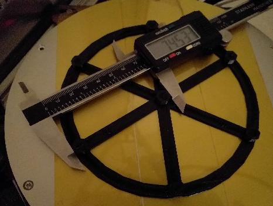
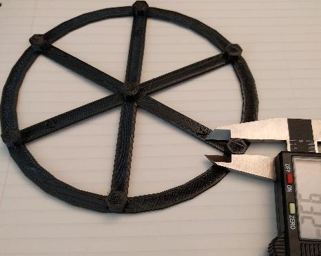

三角校正¶
本文將介紹在Klipper中對「三角洲」運動模式的印表機進行自動校準的操作。
三角洲校準包含確定柱限位開關位置（tower endstop positions），柱夾角（ tower angles），三角半徑（delta radius）和懸臂長度四個參數（delta arm lengths）。上述參數將用於三角洲印表機的運動控制。然而，由於每個的影響並非顯而易見或其影響具有非線性，因此難以通過手工校正。相對而言，軟體校正在數分鐘的時間后就可以達到極佳的效果。自動校正無需增加探針。
歸根到底，三角洲校準依賴於各柱的限位開關精度。如果使用Trinamic 步進電機驅動，則可考慮使用無限位功能以提高檢測的準確度。
自動校準 vs 手動校準¶
Klipper支援使用手動探高或自動z探針的方法進行三角洲參數校準。
市面上眾多的三角洲印表機附帶了自動Z探針，但這些探針的精度不足。特別對於三角洲，臂長的細微差異會導致效應器傾斜，導致列印效果一塌糊塗。如果使用自動探針，則先進行探針校準，然後檢查探針位置漂移。如果探針的偏差大於25微米（0.025mm），則應使用手動探高。手動探高只需要數分鐘的時間，並能摒棄探針帶來的誤差。
如果使用的探針是安裝在噴嘴的一側（即，探針對噴嘴存在xy偏移），需注意在進行過三角洲校準之後會使探針校準的結果無效。該型別的探針並不適用於三角洲印表機（因為效應器傾斜會差生探針位置漂移）。如果仍使用上述的探針，則需在三角洲校準校準后再進行一次探針校準。
簡單三角洲校準¶
通過DELTA_CALIBRATE 命令可以在Klipper中進行簡單三角洲校準。該命令會對熱床上的7個不同的位置進行探高，並計算除柱夾角，柱限位位置和三角半徑。
要進行校準，需要先提供柱夾角，柱限位位置和三角半徑的初始值，這些值應與實際值只有幾毫米的偏差。大多三角洲印表機套件會提供這些值，在配置檔案中輸入這些值作為初始配置，然後按照下述步驟執行DELTA_CALIBRATE 。如果無法找到初始值，則可以通過搜索 三角洲校準 教程，作為測量的依據。
校準期間，印表機需要對熱床外的底板進行探高。通常可以通過修改設定中的 minimum_z_position=-5 以實現床外探高。（校準后可以在設定中移除該項。）
探高的方式有兩種：手動探高(DELTA_CALIBRATE METHOD=manual)和自動探高(DELTA_CALIBRATE)。手動探高模式下，列印頭將會移近熱床，然後等候使用者使用 "紙測法" 測量特定位置上的噴嘴和熱床的之間的偏差值。
進行簡單校準，請確保在配置檔案中定義了[delta_calibrate]，然後執行工具：
G28
DELTA_CALIBRATE METHOD=manual
在測量了7個點，並計算得出新三角洲參數后，執行下面的命令來儲存參數：
SAVE_CONFIG
簡單校準獲得的參數，其準確性可以滿足日常列印的需求。對於新印表機，可以嘗試列印幾個簡單模型，確定功能正常。
進階三角洲校準¶
簡單三角洲校準獲得的三角洲參數可以很好地修正噴嘴距離之類問題。然而，該模式不能校準X，Y軸上的準確度。而進階三角洲校準則是針對維度準確性地問題。
校準流程需要列印一個測試模型並用遊標卡尺測量模型的尺寸。
Prior to running an enhanced delta calibration one must run the basic delta calibration (via the DELTA_CALIBRATE command) and save the results (via the SAVE_CONFIG command). Make sure there hasn't been any notable change to the printer configuration nor hardware since last performing a basic delta calibration (if unsure, rerun the basic delta calibration, including SAVE_CONFIG, just prior to printing the test object described below.)
用切片器對docs/prints/calibrate_size.stl的模型進行切片，產生G-Code。速度設定使用低速（例如 40mm/s）。如可能使用剛性塑料（如PLA）。模型的外徑為140mm。如果尺寸太大則按照熱床大小進行縮小（但應注意X和Y應按比例進行縮放）。如果印表機的熱床足夠大，也可以放大該模型。大尺寸可以提高測量的準確性，但是模型的床附著對測量準確性影響更大。
列印測試模型並等待其完全冷卻。印表機設定和校準模型必須一一對應（即，在列印校準模型后，不要再進行DELTA_CALIBRATE或修改印表機參數，否則模型測量無效），再執行下面的命令。
如可能，在模型黏著在床上進行測量，但若模型脫離熱床也沒有關係——這步驟只是爲了減少模型的彎曲。
首先測量中心柱到印有「A」標誌的柱的距離（即中心到A柱方向的距離）。

之後，按照逆時針方向逐一測量中心柱到邊沿柱的距離（中心到C標籤柱的距離，中心到B標籤柱的距離等）。

以 逗號分隔的浮點數 的形式將數據輸入到Klipper：
DELTA_ANALYZE CENTER_DISTS=<a_dist>,<far_c_dist>,<b_dist>,<far_a_dist>,<c_dist>,<far_b_dist>
數據之間不要插入 空格 。
之後測量A柱和C柱之間的距離。

之後測量C柱和B柱，以及B柱和A柱之間的距離等。
將參數輸入到Klipper：
DELTA_ANALYZE OUTER_DISTS=<a_to_far_c>,<far_c_to_b>,<b_to_far_a>,<far_a_to_c>,<c_to_far_b>,<far_b_to_a>
此時可以拆除床上的模型。最後要測量的是柱子的尺寸。首先測量中心柱在A柱方向上，B柱方向上以及C柱方向上的尺寸。

將結果輸入Klipper：
DELTA_ANALYZE CENTER_PILLAR_WIDTHS=<a>,<b>,<c>
然後側向外側柱子的尺寸。首先測量A柱朝向C柱內側的面之間的尺寸（見下圖）。

之後逆時針逐一測量外則柱子的尺寸（測量C柱朝向B柱內側的面之間的尺寸，測量B柱朝向A柱內側的面之間的尺寸等）。

並將參數輸入Klipper：
DELTA_ANALYZE OUTER_PILLAR_WIDTHS=<a>,<far_c>,<b>,<far_a>,<c>,<far_b>
如果模型經過了縮放，則輸入切片時使用的縮放係數：
DELTA_ANALYZE SCALE=1.0
（輸入係數2.0則模型被放大一倍，輸入係數0.5則模型被縮小至一半。）
最後輸入下列面命令進行三角校準：
DELTA_ANALYZE CALIBRATE=extended
該命令將進行數分鐘的計算。計算將給出三角洲參數（三角半徑，柱夾角，限位位置，臂長）。之後使用SAVE_CONFIG 儲存並應用結果：
SAVE_CONFIG
SAVE_CONFIG 會儲存計算並更新后的三角參數。之後的DELTA_CALIBRATE 命令也會給予進階計算的結果。請勿在SAVE_CONFIG 重新輸入原始測量數據，因為此時原始測量數據已不會應用至三角參數上。
額外要點¶
- 如果三角洲印表機的尺寸相當準確，則兩柱間的距離應該在74mm附近，並各個柱子的尺寸應為9mm（即目標為柱子面向另一柱子的一側到所向柱子的統一面的距離為65mm）。如果尺寸不準確，則可以通過DELTA_ANALYZE ，基於之前DELTA_CALIBRATE 獲得的高度測量數據和距離測量數據產生新的三角參數。
- DELTA_ANALYZE 的結果可能不符合邏輯。比如，它計算出的臂長可能于印表機的實際臂長不符。儘管如此，測試結果表明 DELTA_ANALYZE 總能給出出色的列印結果。推測這是因為計算三角參數的時候將其他未知的影響參數也納入到計算考慮。例如，臂長的細微差異會使效應器傾斜，而通過調節臂長的計算基準可以補償這種差異。
在三角洲印表機上使用床網¶
三角洲印表機上也能使用床網。但是應在開啟床網之前對印表機進行三角校準。在未校準的印表機上使用床網會得出奇怪的結果。
注意進行三角校正會使之前獲得的床網數據無效。應在進行三角校正後重新執行BED_MESH_CALIBRATE。